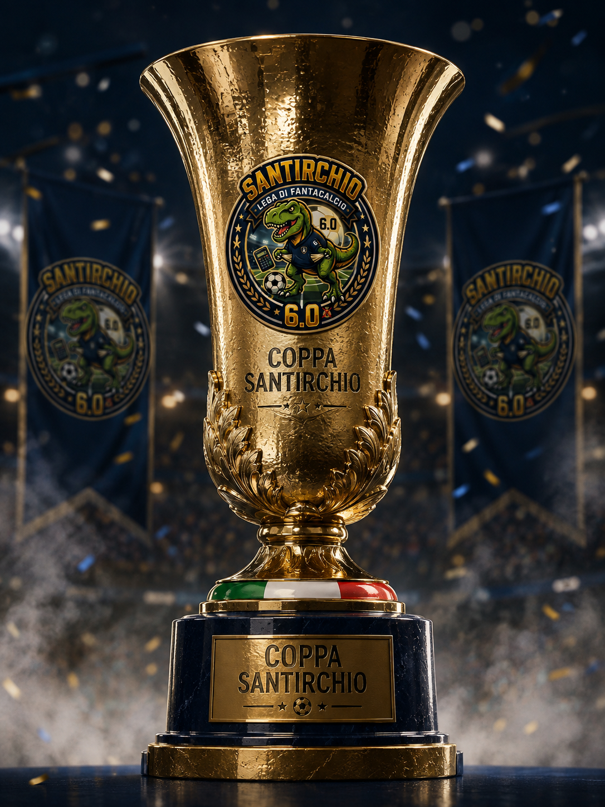
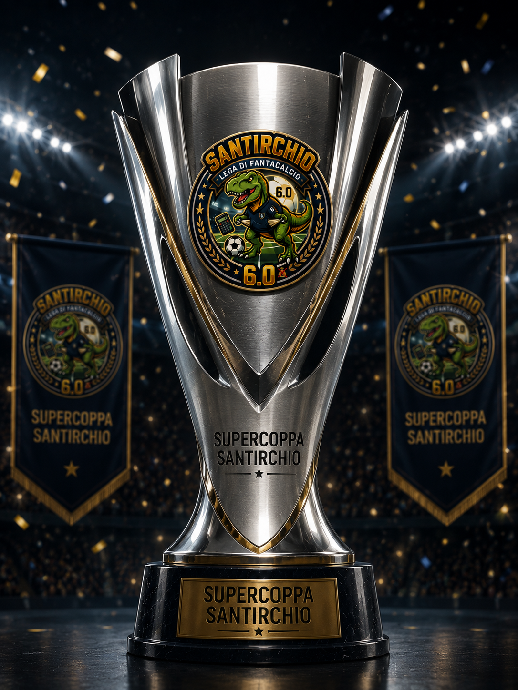

Lega di Fantacalcio
Fondata nel 2021
Il regolamento è stato definito tramite una votazione. W la democrazia e Santa Rosalia.
La lega sarà formata da un'unica divisione, un unico campionato Serie A formato da 38 giornate e suddiviso in girone d'andata e di ritorno. Di conseguenza ogni singolo calciatore può stare in una sola squadra, senza doppioni.
La modalità di gioco è la Classic con i 4 macro ruoli (Portiere P, Difensore D, Centrocampista C e Attaccante A).
I crediti iniziali a disposizione sono 500 e ogni rosa è formata da 25 giocatori:
• 3 Portieri
• 8 Difensori
• 8 Centrocampisti
• 6 Attaccanti
Per le partite rinviate si aspettano massimo 15 giorni, dopo 6 politico.
L'asta si svolgerà su FantaLab con chiamata classica per ruolo. Ogni giocatore nel proprio turno chiamerà il giocatore desiderato e ognuno potrà puntare manualmente dal sito aggiungendo +1,+5 o +10 crediti alla volta.
Il 19 Agosto verranno definiti i portieri e i difensori mentre il 20 Agosto si finirà con i centrocampisti e gli attaccanti. Nell'eventualità che riuscissimo ad avere i FantaBuzz in prestito si potrà premere aggiungendo un solo credito alla volta. Non si dovrà passare nessun turno e si può entrare nell'asta in qualsiasi momento. La location è ancora da decidere e abbiamo necessariamente bisogno di una TV dove proiettare i giocatori che escono e le squadre di tutti aggiornate live.
L'asta di riparazione sarà sicuramente: Settembre a fine mercato estivo e Febbraio a fine mercato invernale. Se riuscissimo a farla in presenza/a distanza sarebbe buono. Come gli altri anni a buste chiuse si vedrà in corso d'opera.
Si potranno svincolare tutti i giocatori che si vogliono al 50% della quota d'acquisto.
La panchina è formata da 7 giocatori senza vincolo di ruolo. Saranno possibili massimo 3 sostituzioni quindi se non giocano 4 titolari non entrerà nessuno dalla panchina pur essendoci un giocatore di quel ruolo con voto.
La tipologia della sostituzione è Traditional, l'ordine di schieramento della panchina vale solo per il ruolo interessato, nessun cambio modulo. La formazione potrà essere schierata massimo 15 minuti prima dell'inizio della prima partita della giornata. Esempio: giocano sabato alle 15:00, si può inserire massimo alle 14:45. Le formazioni non possono essere rese invisibili.Lo switch non c'è
Se un partecipante non schiera la formazione viene recuperata quella della giornata precedente ma verrà imposta una penalità di 2 euro e tolti 3 punti nella classifica generale. Attivato il modificatore difesa con fasce presenti sull'app. Tutti gli altri modificatori sono disattivati.
I gol varranno +3 (per tutti tranne per il portiere che vale +99). Il gol subito vale -1. Rigore segnato o parato +3 mentre rigore sbagliato -3. Ammonito -0.5 Espulso -1. Gli assist saranno soft +0.5, standard +1 e gold +1.5. Autogol -2, porta inviolata +1, gol vittoria +1 e pareggio +0.5.
Il bonus per l'MVP non c'è. Un giocatore che prende s.v. ma viene ammonito prende 5,5 politico. Le fasce gol sono fisse. La soglia per il primo gol è 66 e poi ogni 4 punti si ottiene un gol in più.La quota iniziale sarà di 50€ a persona per un totale di 500€:
• 1º 180€
• 2º 120€
• 3º 80€
• Coppa Santirchio 70€
• Supercoppa Santirchio 50€
Seleziona una coppa per vedere gironi e risultati.

